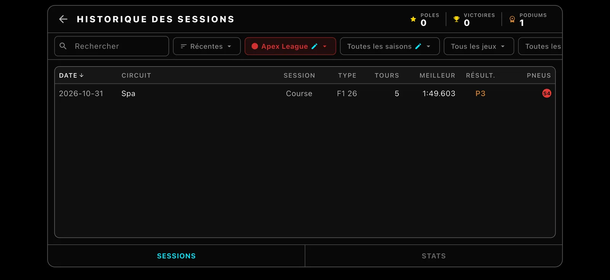
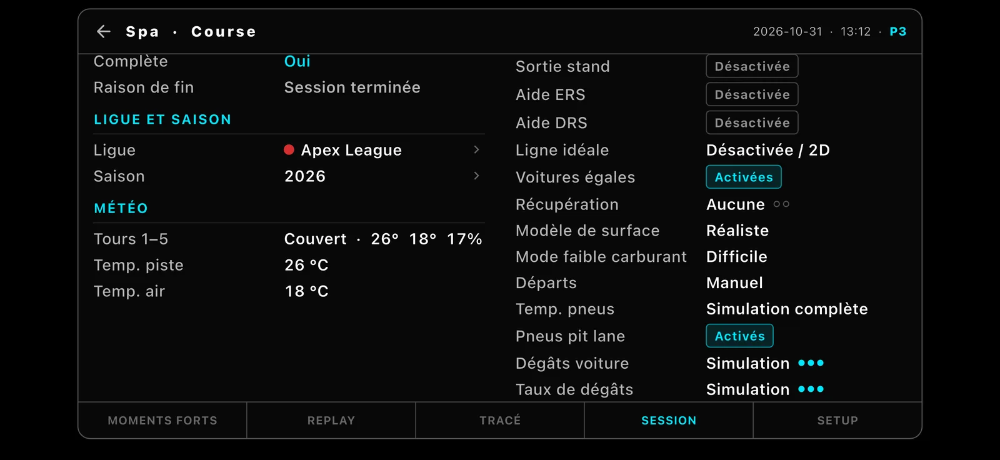

Gratuit
- Créer des ligues et associer les sessions que vous pouvez ouvrir
- Les filtres de ligue et de saison
Comment ça marche
Regroupez vos courses de ligue et vos saisons, puis filtrez l’historique et vos statistiques en conséquence.
Si vous courez dans une ou plusieurs ligues, l’association garde les sessions de chaque ligue ensemble. Filtrez l’historique ou vos statistiques par ligue et par saison pour suivre un championnat, sans vos essais en solo mélangés.

Une ligue doit exister avant que vous puissiez y associer une session.
Supprimer une ligue ne supprime jamais de session. Les sessions associées n’affichent simplement plus de ligue.
Si vous n’avez encore aucune ligue, la ligne Ligue indique « Aucune ligue ». Créez-en une d’abord, comme à l’étape 1.

De retour dans l’onglet SESSIONS, touchez Toutes les ligues ou Toutes les saisons pour n’afficher qu’une ligue ou qu’une saison. La liste des saisons ne propose que les années que vous avez réellement utilisées. L’onglet STATS a les mêmes filtres de ligue et de saison.